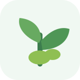

OPT ExplorerPest · Disease · Weed · MoA
AL-KITAB UNTUK SALES, FORMULATOR DAN PETANI MBOIS
Kenali OPT
sebelum Terlambat
Basis pengetahuan hama, penyakit, gulma dan mekanisme aksi untuk pertanian yang lebih berkelanjutan.
—OPT
—Bahan Aktif
LengkapIRAC · FRAC · HRAC
“Pertanian yang lebih tangguh, dimulai dari pengetahuan.”
Jenis OPTPilih kelompok organisme pengganggu tanaman
⌕

Kenali Musuh TanamanLindungi Hasil Panen dengan keputusan berbasis informasi.
HamaSerangga · Tungau · Nematoda
PenyakitFungi · Bacteria · Virus · Oomycete
GulmaGrass · Broadleaf · Sedge · Aquatic
Tanaman & InangLihat OPT berdasarkan tanaman
IRACInsecticide · Acaricide · Nematicide
⌕
Scan & IdentifikasiAnalisa foto tanaman
📷Ambil foto / pilih fotoMode demo — hasil identifikasi perlu diverifikasi di lapangan.
Hasil Analisis
1
Thrips parvispinusKemungkinan tinggi
87%2
Tetranychus spp.Kemungkinan sedang
21%3
Aphis gossypiiKemungkinan rendah
8%